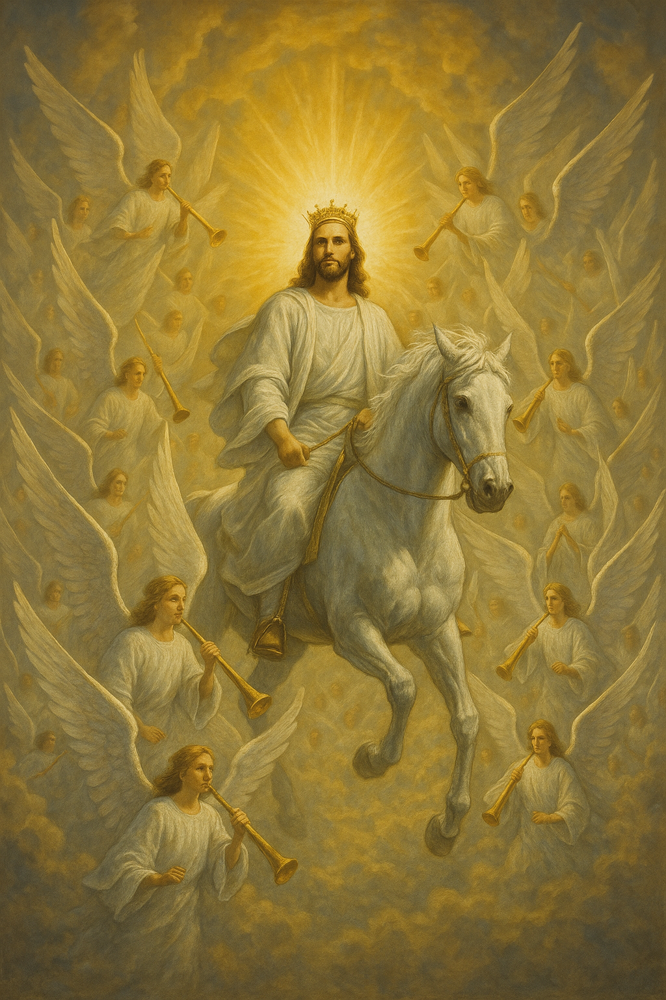

La Promesa del Retorno
La promesa del regreso de Cristo no es una doctrina periférica, sino que está en el centro mismo de la fe cristiana. Jesús mismo prometió claramente su retorno en numerosas ocasiones. Momentos antes de su ascensión, los ángeles aseguraron a los discípulos: "Este mismo Jesús, que ha sido tomado de vosotros al cielo, así vendrá como le habéis visto ir al cielo" (Hechos 1:11).
El Nuevo Testamento contiene más de 300 referencias al retorno de Cristo, enfatizando tanto su certeza como su importancia para la vida cristiana. La esperanza del regreso del Señor ha sostenido a la Iglesia a través de persecuciones, tribulaciones y pruebas a lo largo de los siglos.
"Y si me fuere y os preparare lugar, vendré otra vez, y os tomaré a mí mismo, para que donde yo estoy, vosotros también estéis."
Juan 14:3
La Promesa Antigua
Las profecías del Antiguo Testamento ya anunciaban aspectos de la Segunda Venida, aunque a menudo entremezclados con las predicciones de la Primera Venida. El profeta Daniel habla de "uno como un hijo de hombre que venía con las nubes del cielo" (Daniel 7:13-14), a quien se le da "dominio, gloria y reino, para que todos los pueblos, naciones y lenguas le sirvan".
De manera similar, Zacarías profetizó: "Y se afirmarán sus pies en aquel día sobre el monte de los Olivos... Y Jehová será rey sobre toda la tierra." (Zacarías 14:4,9).
Daniel 7:13-14, Zacarías 14:4-9
Las Enseñanzas de Jesús
Jesús enseñó extensamente sobre su regreso, particularmente en el discurso del Monte de los Olivos (Mateo 24-25). Allí describe tanto las señales que precederán a su venida como la naturaleza de su retorno, que será visible y glorioso: "Porque como el relámpago que sale del oriente y se muestra hasta el occidente, así será también la venida del Hijo del Hombre." (Mateo 24:27).
Sus parábolas del Reino a menudo incluían referencias a su regreso, como las de las diez vírgenes, los talentos y las ovejas y las cabras, todas las cuales enfatizan la necesidad de estar preparados y vigilantes.
Mateo 24:30-31, 25:31-46; Lucas 21:25-28
El Testimonio Apostólico
Los apóstoles continuaron enfatizando la promesa del retorno de Cristo como parte central de su predicación. Pablo describe la Segunda Venida como "nuestra esperanza bienaventurada" (Tito 2:13) y detalla su secuencia en 1 Tesalonicenses 4:13-18. Pedro advierte contra los burladores que cuestionarían la promesa de su venida (2 Pedro 3:3-4) y asegura que el "día del Señor" ciertamente llegará.
El libro de Apocalipsis, la revelación dada a Juan, culmina con la gloriosa descripción del retorno de Cristo como el jinete en un caballo blanco, "Rey de reyes y Señor de señores" (Apocalipsis 19:11-16).
1 Tesalonicenses 4:16-17; Apocalipsis 1:7, 19:11-16
Características de la Segunda Venida
La Biblia revela varias características distintivas del retorno de Cristo:
Visible y Personal
Cristo regresará física y visiblemente, no de manera simbólica o espiritual. Todos lo verán: "He aquí que viene con las nubes, y todo ojo le verá" (Apocalipsis 1:7).
Glorioso y Triunfante
A diferencia de su primera venida en humildad, regresará en gloria y majestad, acompañado por todos sus ángeles, para establecer su reino (Mateo 25:31).
Súbito e Inesperado
Su venida será repentina, "como ladrón en la noche" (1 Tesalonicenses 5:2), sorprendiendo a quienes no están vigilantes.
Perspectivas Teológicas
Aunque todos los cristianos afirman la certeza del retorno de Cristo, existen diferentes perspectivas sobre el momento y la secuencia de los eventos relacionados:
Pretribulacionismo
J.N. Darby, C.I. Scofield, Tim LaHaye
Esta posición sostiene que la Iglesia será arrebatada antes de la Gran Tribulación, escapando así de los juicios de Dios sobre la tierra.
- El Rapto ocurre antes de la Tribulación
- La Iglesia no experimentará la ira de Dios
- Cristo regresa en dos fases: primero por su Iglesia (en secreto), luego con su Iglesia (en gloria)
Postribulacionismo
George E. Ladd, Robert Gundry
Esta visión enseña que la Iglesia permanecerá en la tierra durante la Tribulación y será arrebatada al final de este período.
- El Rapto coincide con la Segunda Venida visible
- La Iglesia enfrentará la tribulación pero será preservada a través de ella
- Las promesas de protección divina no implican remoción de la tierra
Mesotribulacionismo
Gleason Archer, Paul Feinberg
Esta perspectiva propone que el Rapto ocurrirá a mitad de la Tribulación, coincidiendo con la séptima trompeta.
- La Iglesia experimentará la primera mitad de la Tribulación
- El Rapto ocurre antes de que se derrame la ira de Dios en la segunda mitad
- La "última trompeta" de 1 Corintios 15:52 coincide con la séptima trompeta de Apocalipsis

Eventos Asociados con la Segunda Venida
La Segunda Venida es el punto focal de varios eventos proféticos interconectados:
Señales que Preceden al Retorno
Aunque Jesús afirmó que "nadie sabe el día ni la hora" (Mateo 24:36), sí proporcionó indicadores generales que señalarían la proximidad de su venida:
- La restauración de Israel como nación (Mateo 24:32-33; Lucas 21:29-31)
- Aumento de falsos profetas y falsos cristos (Mateo 24:5, 24)
- Guerras y rumores de guerras a escala global (Mateo 24:6-7)
- Hambrunas, plagas y terremotos en diversos lugares (Mateo 24:7; Lucas 21:11)
- Persecución intensificada contra los creyentes (Mateo 24:9)
- Apostasía generalizada dentro de la iglesia nominal (2 Tesalonicenses 2:3; 2 Timoteo 3:1-5)
- Predicación mundial del evangelio a todas las naciones (Mateo 24:14)
- Desarrollos tecnológicos que facilitan el control global (Apocalipsis 13:16-17)
- Creciente unificación política y religiosa (Apocalipsis 17-18)
"Por lo demás, me está guardada la corona de justicia, la cual me dará el Señor, juez justo, en aquel día; y no sólo a mí, sino también a todos los que aman su venida."
2 Timoteo 4:8
Implicaciones Prácticas de la Segunda Venida
La doctrina del retorno de Cristo no es simplemente un ejercicio teórico o especulativo. Tiene profundas implicaciones prácticas para la vida cristiana:
Santidad Personal
"Y todo aquel que tiene esta esperanza en él, se purifica a sí mismo, así como él es puro." (1 Juan 3:3). La expectativa del regreso de Cristo nos motiva a vivir vidas santas y consagradas.
Vigilancia Espiritual
Jesús llamó repetidamente a sus seguidores a "velar y orar" (Marcos 13:33), manteniendo una actitud de expectativa y preparación constante.
Urgencia Evangelística
La inminencia del retorno de Cristo impulsa a la Iglesia a proclamar el evangelio con urgencia mientras hay tiempo (Mateo 24:14).
Esperanza en Tribulación
La certeza del triunfo final de Cristo proporciona consuelo y fortaleza durante las pruebas y persecuciones (Romanos 8:18; 2 Corintios 4:17).
Preguntas Frecuentes
Interrogantes Comunes
El término "rapto" no aparece en las Escrituras, pero proviene de la palabra latina "rapturo" utilizada en la Vulgata para traducir la expresión griega en 1 Tesalonicenses 4:17 ("seremos arrebatados"). El concepto de los creyentes siendo "arrebatados" o "llevados" para encontrarse con el Señor es claramente bíblico, aunque existen diferentes interpretaciones sobre su momento y naturaleza.
Pablo describe este evento como un momento en que los creyentes, tanto vivos como muertos, serán transformados instantáneamente y elevados para encontrarse con Cristo en el aire. La discusión teológica no gira en torno a si ocurrirá el arrebatamiento, sino a cuándo ocurrirá en relación con otros eventos proféticos, particularmente la Gran Tribulación.
No. Jesús afirmó categóricamente: "Pero del día y la hora nadie sabe, ni aun los ángeles de los cielos, sino sólo mi Padre" (Mateo 24:36). Los intentos de fijar fechas específicas contradicen directamente esta enseñanza y han conducido invariablemente a la desilusión y al descrédito del testimonio cristiano.
A lo largo de la historia, numerosos predicadores bien intencionados han calculado fechas basándose en interpretaciones de profecías numéricas o en supuestos patrones históricos, solo para ser desmentidos por el paso del tiempo. Jesús nos llamó a estar siempre preparados, precisamente porque el momento exacto no puede ser conocido por nosotros.
Las dos venidas de Cristo contrastan dramáticamente en propósito y manifestación:
- En su Primera Venida, Cristo vino en humildad, como siervo, nacido en un pesebre. Vino para sufrir y morir, para expiar el pecado a través de su sacrificio.
- En su Segunda Venida, regresará en gloria y poder, como Rey conquistador. Vendrá para reinar y juzgar, para establecer su reino de justicia.
La primera vez, vino para salvar; la segunda, viene para juzgar. La primera vez, pocos lo reconocieron; la segunda vez, todo ojo lo verá. La primera vez, el mundo lo rechazó; la segunda vez, toda rodilla se doblará ante Él.
El retorno de Cristo representa tanto el día más temido como el más esperado, dependiendo de la relación que uno tenga con Él. Para los creyentes, será un día de vindicación, redención y gozo inefable, el momento en que nuestra salvación se completará y estaremos para siempre con el Señor.
Para aquellos que han rechazado a Cristo, será un día de juicio terrible. La misma venida que trae redención para unos trae juicio para otros. Sin embargo, incluso en el juicio, la misericordia de Dios es evidente: ha proporcionado amplia advertencia y oportunidad para el arrepentimiento, y el juicio mismo es una expresión de su justicia perfecta.